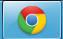

Nella barra a sinistra sono presenti tutti i servizi a cui puoi accedere, suddivisi in paragrafi.
La voce:
-
- "Help" apre un finestra dimostrativa con lo scopo di aiutare l'utente su come approcciarsi all'applicazione.
Possiede anche un "Manuale" con tutti i gli argomenti;

- "Altro" permette di poter cambiare la password e di uscire dal programma.